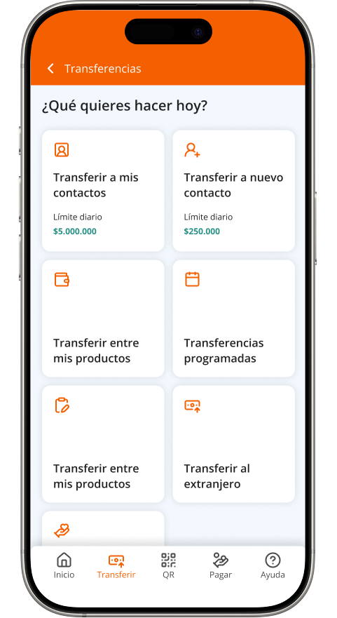

Redesigning transfers meant separating navigation from the transaction itself.
Research showed that putting tasks on fewer screens did not reduce effort. I reorganized access to features, split the form for new recipients, and improved the receipt. After testing and adjustments with engineering, the new experience was rolled out gradually in 2025; its navigation pattern was also adopted in other modules.

